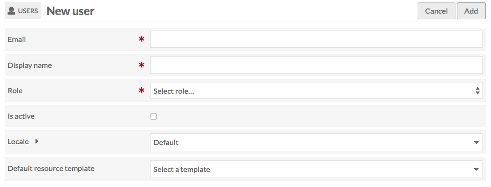
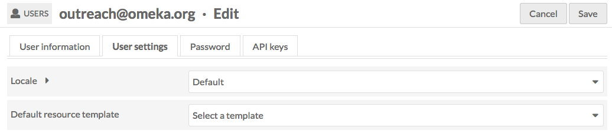
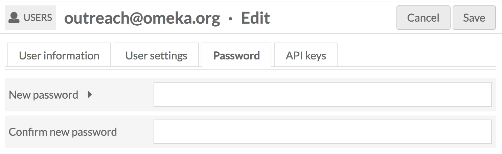
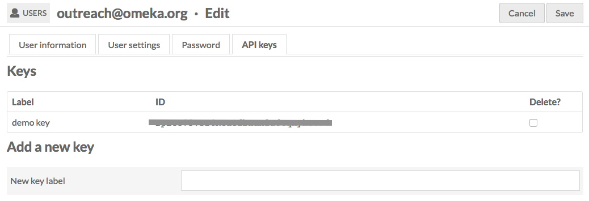
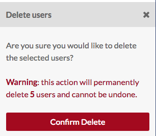

Seuls les administrateurs de site et globaux peuvent créer, éditer et supprimer des utilisateurs. Les éditeurs, les relecteurs, les auteurs et les chercheurs peuvent modifier leurs propres informations utilisateur mais ne peuvent pas modifier les informations des autres utilisateurs.
Les administrateurs gèrent et créent des utilisateurs à partir de l'onglet Utilisateur du tableau de bord administratif principal (icône personnage)
Cette section Utilisateurs affiche le courrier électronique de l’utilisateur suivi du nom complet entre parenthèses, ainsi que leur rôle et la date de création du compte.
<<<<<<< HEAD - Global Admin: full installation privileges - Supervisor: robust site and content privileges - Editor (Content Expert): full privileges for content creation - Reviewer: robust content privileges but can only delete own content. - Author: Create own content. - Researcher: Search and read privileges only. ======= Omeka S comprend six rôles d'utilisateur
[FR] Traduction française - fr-v0.1
- Administrateur global: tous les droits.
- Administrateur de site: droits de gestion de site et des ressources.
- Éditeur (Expert du contenu): droits complets sur toutes les ressources.
- Relecteur: droits sur les ressources mais peut uniquement supprimer ses propres ressources.
- Auteur: créer ses propres ressources.
- Chercheur: rechercher et droits en lecture uniquement.
Créer un nouvel utilisateur
Pour créer un nouvel utilisateur, sélectionnez le bouton Ajouter un nouvel utilisateur dans le coin supérieur droit de la section Utilisateurs du tableau de bord.
Sur la page Ajouter un utilisateur, entrez les informations suivantes:
- Nom à afficher (nom complet ou pseudo)
- Choisissez un Rôle en utilisant la liste déroulante (voir les droits ci-dessus)
- Cochez la case Est actif pour confirmer que l'utilisateur est actif.
<<<<<<< HEAD

=======

[FR] Traduction française - fr-v0.1
Gérer les utilistateurs
Pour gérer un utilisateur existant, accédez à la section Utilisateurs.
<<<<<<< HEAD
 =======
=======

[FR] Traduction française - fr-v0.1
Pour afficher le nom, l'adresse électronique et le rôle d'un utilisateur, cliquez sur le nom d'utilisateur.
Pour afficher les contenus et les collections appartenant à un utilisateur, cliquez sur le bouton plus (trois petits points) situé entre le bouton supprimer (corbeille) et le libellé du rôle de l'utilisateur. Cela ouvrira un onglet sur le côté droit de l'écran avec cette information; vous pouvez cliquer sur le nombre de contenus ou de collections pour accéder aux contenus ou aux collections créés par cet utilisateur.
Modifier l'utilisateur
Pour modifier les informations d’un utilisateur, modifier son mot de passe ou accéder aux clés de l’API, accédez à la section Utilisateurs. Recherchez l'utilisateur dans le tableau et cliquez sur l'icône d'édition (crayon) située sur sa ligne dans le tableau.
<<<<<<< HEAD
 =======
! Une seule ligne du tableau utilisateur, avec le courrier électronique de l'utilisateur masqué. Un cercle bleu surplombe l'icône d'édition, représentée par un crayon rouge.
=======
! Une seule ligne du tableau utilisateur, avec le courrier électronique de l'utilisateur masqué. Un cercle bleu surplombe l'icône d'édition, représentée par un crayon rouge.
{kind=link}
[FR] Traduction française - fr-v0.1
La page Modifier un utilisateur comporte quatre onglets: Informations de l'utilisateur, Paramètres utilisateur, Mot de passe et Clé API. Après avoir apporté des modifications à l’un de ces onglets, veillez à cliquer sur le bouton Enregistrer dans le coin supérieur droit de la fenêtre du navigateur. À tout moment, vous pouvez annuler vos modifications en cliquant sur le bouton Annuler situé en regard du bouton Enregistrer.
Informations de l'utilisateur
Sur cet onglet, vous pouvez modifier l'affichage Nom et Email de l'utilisateur, sélectionner ou modifier le Rôle de l'utilisateur et cliquer sur la case à cocher pour confirmer que l'utilisateur est actif (ou décocher la case pour rendre l'utilisateur inactif)
<<<<<<< HEAD
 =======
! Onglet informations utilisateur pour l'utilisateur Omeka avec les champs remplis pour l'email, le nom complet, le rôle et la case à cocher active pour Est actif
=======
! Onglet informations utilisateur pour l'utilisateur Omeka avec les champs remplis pour l'email, le nom complet, le rôle et la case à cocher active pour Est actif
{kind=link}
[FR] Traduction française - fr-v0.1
Paramètres utilisateur
Cet onglet permet à un utilisateur ou à un administrateur général de définir les éléments suivants:
- Paramètres régionaux: sélectionnez un menu déroulant parmi les langues disponibles. Cela modifiera la langue d'affichage du site d'administration pour cet utilisateur.
- Modèle de ressource par défaut: sélectionnez parmi les modèles existants pour charger automatiquement un modèle à chaque fois que l'utilisateur crée un nouveau contenu.
<<<<<<< HEAD  ======= ! Paramètres utilisateur pour Omeka avec les options par défaut sélectionnées
{kind=link}
[FR] Traduction française - fr-v0.1
Mot de passe
Sur cet onglet, créez un nouveau mot de passe. Il doit être saisi deux fois, dans les champs nouveau mot de passe et confirmer le nouveau mot de passe.
<<<<<<< HEAD 
To see the password requirements, click the arrow next to the New Password field. This will display a list of requirements if any have been configured.
! Champs vides de réinitialisation du mot de passe pour l'utilisateur
{kind=link}
Pour voir les exigences en matière de mot de passe, cliquez sur la flèche en regard du champ Nouveau mot de passe. Cela affichera une liste de conditions requises, le cas échéant.
[FR] Traduction française - fr-v0.1
Clé API
Utilisez cet onglet pour générer une clé API pour l'utilisateur. Vous devez fournir un libellé pour la clé - il peut s’agir d’une date ou du but de la clé. Cliquez sur Enregistrer pour générer la clé.
Pour supprimer les clés d'API existantes, cochez la case Supprimer? sur la ligne correspondant à cette clé, puis cliquez sur Enregistrer.
<<<<<<< HEAD  ======= ! Onglet API pour l'utilisateur Omeka avec une clé d'API générée mais cachée et, en dessous, la possibilité de créer une nouvelle clé
{kind=link}
[FR] Traduction française - fr-v0.1
Vous pouvez modifier plusieurs utilisateurs à la fois en utilisant les cases à cocher situées à gauche du courrier électronique de chaque utilisateur dans le tableau Utilisateurs.
Cliquez sur les cases à cocher pour sélectionner les utilisateurs que vous souhaitez modifier.
{kind=link}
<<<<<<< HEAD
 =======
Ensuite, à l'aide du menu déroulant situé juste au-dessus du tableau, sélectionnez l'une des options suivantes:
=======
Ensuite, à l'aide du menu déroulant situé juste au-dessus du tableau, sélectionnez l'une des options suivantes:
[FR] Traduction française - fr-v0.1
- Modifiés sélectionnés (utilisateurs)
- Modifier tout (utilisateurs)
- Supprimer sélectionnés (utilisateurs)
- Supprimer tout (utilisateurs)
Pour éditer uniquement les utilisateurs dont les cases à cocher sont cochées, choisissez "Modifier sélectionnés " dans le menu déroulant, puis cliquez sur "OK". Vous serez dirigé vers la page Modifier les utilisateurs par lot.
<<<<<<< HEAD
 =======
=======

[FR] Traduction française - fr-v0.1
Sur le côté droit de la page se trouvent les courriers électroniques des utilisateurs que vous modifiez et auxquels les modifications que vous apportez seront appliquées.
Sur cette page, vous pouvez:
- Définir le rôle: sélectionnez dans un menu déroulant tous les rôles (voir ci-dessous) pour modifier le rôle de tous les utilisateurs sélectionnés.
- Définir l'activité: définissez les utilisateurs sélectionnés comme actifs, non actifs ou sans changement.
- Supprimer des autorisations de site: sélectionnez dans un menu déroulant les sites de l'installation d'Omeka S ou utilisez l'option "Tous les sites" pour supprimer les utilisateurs sélectionnés de tous les sites.
- Ajouter aux autorisations du site: sélectionnez dans un menu déroulant les sites de l'installation d'Omeka S ou utilisez l'option "Tous les sites" pour ajouter les utilisateurs sélectionnés à tous les sites.
- Ajouter aux autorisations du site sous forme de: une liste déroulante avec des options pour le visualiseur, l'éditeur ou l'administrateur - sélectionnez le rôle que les utilisateurs auront sur les sites auxquels vous les avez ajoutés.
Une fois que vous avez terminé, cliquez sur Enregistrer les modifications.
Si vous choisissez "Modifier tout" plutôt que "Modifié sélectionnés", vous pouvez appliquer les modifications à tous les utilisateurs - dont vous-même - sur l’installation de Omeka S. Utilisez donc cette fonctionnalité avec la plus grande précaution !
<<<<<<< HEAD
 =======
=======
Supprimer un utilisateur
Sur la page Utilisateur du tableau de bord administratif, cliquez sur l'icône corbeille située dans la ligne de l'utilisateur, à gauche des informations sur leur rôle, pour supprimer l'utilisateur. Confirmez la suppression dans la boîte de dialogue qui apparaîtra à droite de l'écran.

[FR] Traduction française - fr-v0.1
Suppression par lot d'utilisateurs
Pour supprimer plusieurs utilisateurs à la fois, cochez les cases en regard de leurs noms dans le tableau Utilisateurs (voir Modification par lot d'utilisateurs, ci-dessus).
Dans le menu déroulant situé juste au-dessus de la colonne de courrier électronique, sélectionnez "Supprimer la sélection", puis cliquez sur OK.
<<<<<<< HEAD
=======

[FR] Traduction française - fr-v0.1
Cela ouvrira un onglet sur le côté droit de l'écran avec un message vous indiquant le nombre d'utilisateurs que vous êtes sur le point de supprimer. Cette action ne peut pas être annulée. Pour supprimer définitivement ces utilisateurs, cliquez sur le bouton rouge Confirmer la suppression. Pour annuler, cliquez sur le x dans le coin supérieur droit du tiroir.

<<<<<<< HEAD  ======= L'action "Tout supprimer" dans le menu déroulant supprimera tous les utilisateurs, à l'exclusion de vous-même. Cette action * ne peut pas être annulée * et doit être utilisée avec une extrême prudence.
[FR] Traduction française - fr-v0.1
Pour supprimer définitivement ces utilisateurs, vous devez cocher la case "Êtes-vous sûr" avant de cliquer sur le bouton "Confirmer la suppression". Pour annuler, cliquez sur le x dans le coin supérieur droit du tiroir.
Rôles et autorisations
Voici une liste détaillée des autorisations pour chaque rôle d'utilisateur:
Administrateur global
- Droits complets (création, modification, suppression) sur les contenus, les collections, les médias, les modèles de contenus, les pages de site, les sites et les utilisateurs.
- Droits complets sur les modules - installer, activer, configurer.
- Rechercher, lire, créer et supprimer des droits sur les vocabulaires.
<<<<<<< HEAD Supervisor
- Full privileges (create, edit, delete) of item, item sets, media, resource templates, site pages, sites, and users.
- Browse-only privileges for modules in the module tab. Can interact with active modules where appropriate.
-
Search, read, and create privileges for Vocabularies (cannot delete)
Administrateur du site
-
Droits complets (création, modification, suppression) sur les contenus, les collections, les médias, les modèles de contenus, les pages de site, les sites et les utilisateurs.
- Droits de navigation dans les modules. Les administrateurs de site peuvent interagir avec les modules actifs, le cas échéant.
- Rechercher, lire et créer des droits sur les vocabulaires (impossible de supprimer).
[FR] Traduction française - fr-v0.1
Éditeur
- Droits complets (création, modification, suppression) sur les contenus, les collections, les médias, les modèles de contenus, les pages de site.
- Peut rechercher, lire et créer des sites et des utilisateurs, et modifier ou supprimer des sites qu’ils possèdent. Ne peut supprimer que son propre profil utilisateur.
- Rechercher et lire uniquement les droits sur les vocabulaires.
- Pas de droits sur les modules.
Relecteur
<<<<<<< HEAD - Can search, read, create, and edit all items, item sets, and media. Can only delete those items, item sets, and media. - Can be added to a site at the Creator or Manager levels, which enables them to search, read, create, edit, and delete site pages. If a Reviewer has not beed added as a site user, they will have read-only access to that site's content. - Search and read only privileges for vocabularies and resource templates. - No privileges for modules ======= - Peut rechercher, lire, créer et éditer tous les contenus, collections, médias, sites et pages de sites. Ne peut supprimer que les contenus, collections, supports, sites et pages de site dont il est propriétaire. - Rechercher et lire uniquement les droits sur les vocabulaires et les modèles de ressources. - Pas de droits sur les modules.
[FR] Traduction française - fr-v0.1
Auteur
<<<<<<< HEAD - Can search, read, and create items, item sets, and media. Can only edit or delete content which the user has created. - Can be added to a site at the Creator or Manager levels, which enables them to search, read, create, edit, and delete site pages. If a Reviewer has not beed added as a site user, they will have read-only access to that site's content. - Search and read only privileges for vocabularies and sites. - No privileges for modules ======= - Peut rechercher, lire et créer des contenus, des collections, des supports et des pages de site. Ne peut modifier ou supprimer que le contenu dont il est le créateur. - Rechercher et lire uniquement les droits sur les vocabulaires et les sites. - Pas de droits sur les modules.
[FR] Traduction française - fr-v0.1
Chercheur
- Droits de recherche et de lecture seule pour tout le contenu, les sites et les utilisateurs.
- Pas de droits sur les modules.